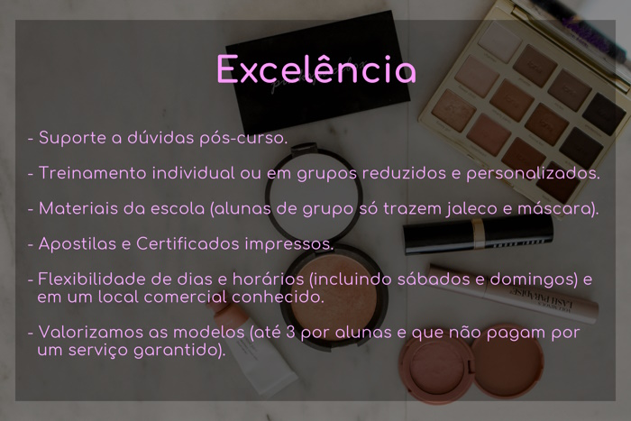

Cursos da Pinkspace Box
A Pinkspace Box conta com diversos cursos na área de estética com diversos benefícios, sempre tendo em mente o melhor aproveitamento possível. Nesta página você pode encontrar o conteúdo programático de todos os nossos cursos.
Conteúdo Programático Geral
- Mercado de Estética;
- Legislação específica na área da Estética;
- Dicas para funcionamento de negócio na área da Estética;
- Ética para negócios em Estética;
- Biossegurança nas Práticas de Estética;
- Boas práticas recomendadas para atuação na Estética;
- Fichas de avaliação para Estética;
- Regras importantes para funcionamento de serviços de Estética;
- Anatomia e fisiologia específicas de acordo com a prática na Estética, para beleza ou saúde;
- Principais patologias a serem observadas de acordo com o procedimento de Estética, para beleza ou saúde.